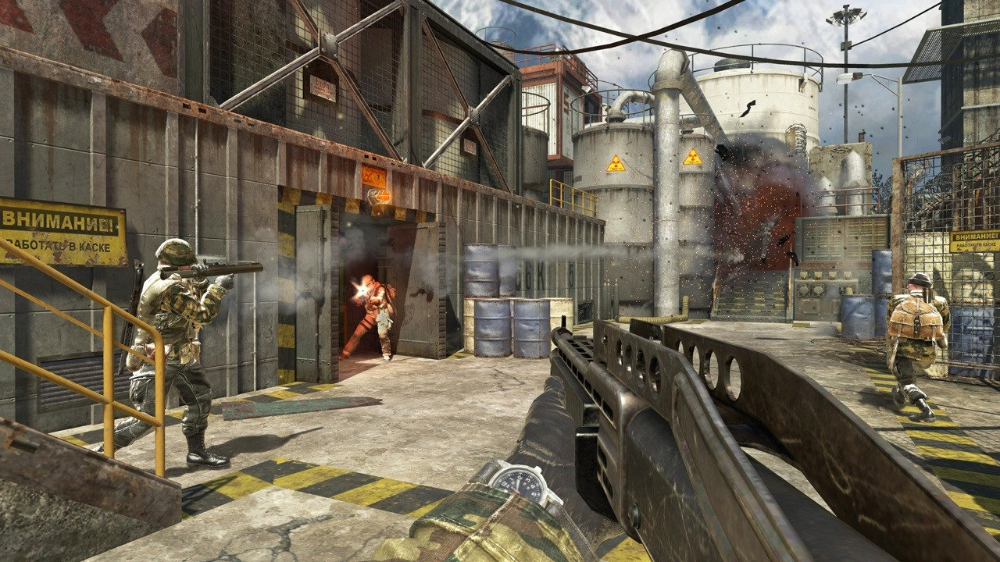

Black Ops es una franquicia juego con un combate multijugador fluido, asentado
y descarnado; con el mayor modo Zombi hasta la fecha y tres aventuras
llenas de no muertos; y con Apagón, donde el universo Black Ops cobra
vida en una enorme experiencia de guerra total que incluye el mapa más
grande de la historia de Call of Duty, el combate característico de Black Ops
y personajes, ubicaciones y armas de la historia de Black Ops, todo en una
experiencia de combate sin cuartel. Prepárate para una guerra sin cuartel,
hecha a medida para la comunidad de Black Ops.
Legado
Call of Duty: Black Ops es un juego de disparos en primera persona de 2010,
desarrollado por Treyarch y publicado por Activision . Fue lanzado en todo
el mundo en noviembre de 2010 para Microsoft Windows , PlayStation 3 ,
Xbox 360 , y Wii , con una versión separada para Nintendo DS desarrollada
por n-Space . Aspyr lanzó más tarde el juego para OS X en septiembre de 2012.
Es el séptimo título en Call of Dutyserie y la tercera desarrollada por Treyarch.
Sirve como secuela de Call of Duty: World at War.
Ambientada en la década de 1960 durante la Guerra Fría , la campaña del juego
sigue al agente de la CIA Alex Mason mientras intenta recuperar ciertos recuerdos
en combate para localizar una estación de números . Esta estación se debe a
las emisiones de transmitir a agentes durmientes que están obligados a utilizar
armas químicas en todo Estados Unidos. Mason y el agente de la CIA Jason Hudson
son los principales personajes jugables del juego, así como el soldado del Ejército
Rojo Viktor Reznov en una sola misión. Las ubicaciones incluidas en el juego
incluyen Cuba , Rusia , Estados Unidos , Kazajstán , Hong Kong , Laos ,Vietnam
y el círculo polar ártico . El multijugador de Black Ops presenta múltiples modos
de juego basados en objetivos que se pueden jugar en 14 mapas diferentes incluidos
con el juego. Se realizan mejoras en las opciones de carga y recompensas killstreak.
Una forma de moneda virtual, COD Points, permite a los jugadores comprar armas y
opciones de personalización para su personaje en el juego, así como accesorios y
opciones de personalización para su arma.
El desarrollo del juego comenzó en 2009. Ejecuta una versión mejorada del motor
IW 3.0 utilizado en el título anterior de Treyarch, World at War. Las mejoras
realizadas permitieron mayores niveles de campaña, así como una mejor iluminación.
Treyarch se centró específicamente en Black Ops durante el desarrollo; estaban
desarrollando dos juegos a la vez mientras hacían World at War . Diferentes
equipos dentro de la empresa se centraron en un cierto modo de juego. La música fue
compuesta por Sean Murray , con música de The Rolling Stones , Creedence Clearwater
Revival , Eminem y Avenged Sevenfoldapareciendo en el juego. La comercialización del
juego comenzó en abril de 2010. Varios trailers que promocionan el juego y sus modos
se lanzaron de mayo a octubre.
Críticas, Ganancias y Datos
El juego recibió críticas generalmente positivas de los críticos. A las 24 horas de
salir a la venta, el juego había vendido más de 5.6 millones de copias, 4.2 millones
en los EE. UU. Y 1.4 millones en el Reino Unido, rompiendo el récord establecido por
su predecesor Modern Warfare 2 en unos 2.3 millones de copias. Después de seis semanas
en el lanzamiento, Activision informó que Black Ops había excedido $ 1 mil millones
en ventas. El 3 de agosto de 2011, Activision confirmó que el juego había vendido
más de 25 millones de copias en todo el mundo, convirtiéndolo en uno de los juegos
más vendidos de todos los tiempos en los Estados Unidos, el Reino Unido y Europa.
Una secuela, Call of Duty: Black Ops II, Fue lanzado en noviembre de 2012. Call of
Duty: Operaciones Negro III fue lanzado en noviembre 2015 como secuela de Operaciones
Negro II.
2. Características
Multijugador

El Multijugador es el plato fuerte de Call of Duty: Black Ops para PC, PS4 y Xbox One,
si bien no es la única vertiente de este título de disparos en primera persona de
Activision y Treyarch. Esta pequeña guía de consejos, trucos y estrategias tiene como
finalidad que entendáis a la perfección todos los pormenores de los sistemas de creación
de clases personalizadas, y los modos de juego multijugador de Black Ops 4 y así podáis
desbloquear todos los logros y trofeos de esta vertiente del juego.
Clases
El sistema de Crear una Clase nos permite editar una o varias ranuras de clases
personalizadas en las que podemos combinar diez elementos cualesquiera entre armas
principales, armas secundarias, accesorios para las armas, dispositivos, equipamientos,
ventajas y comodines. Evidentemente, hay ciertas limitaciones lógicas como no poder
acoplar dos miras a la misma arma.
Es algo esencial para poder jugar a Black Ops 4 de forma eficiente. Lo ideal es
que creemos varias clases personalizadas centradas en roles específicos a los
que podamos cambiar en mitad de una partida teniendo en cuenta las circunstancias
cambiantes de la misma. Deberíamos ir jugando e ir probando qué armas se nos dan
mejor, ya que cada una tiene atributos diferentes en lo que a cadencia de fuego,
daño por bala, o tamaño del cargador se refiere, por poner varios ejemplos.
Rachas de puntos
Las Rachas de Puntos son pequeños potenciadores que podemos usar en mitad de una
partida si hemos conseguido los suficientes puntos para llegar hasta ellas en una
misma vida. Podemos tener equipadas 3 a la vez. Nos ofrecen ventajas de información,
como el clásico UAV que nos permite saber dónde están los enemigos, o ventajas de
superioridad de fuego como por ejemplo solicitar un helicóptero de ataque manejado por la IA.
Si utilizamos una clase personalizada equipada con el Dispositivo SEGCOM, las rachas de
puntos valdrán entre 100 y 200 puntos menos (según la racha de puntos), de modo que podremos
pedirlas de forma más rápida. De este modo, podemos crear una clase personalizada centrada en,
por ejemplo, hacer uso y abuso de varias rachas de puntos menores como el RC-XD, el Dardo y el UAV.
Algunas rachas son:
RC-XD (450 puntos): Coche teledirigido cargado de explosivos.
Dardo (500 puntos): Pilota un dron antipersona. Detona el dron a distancia, o haciéndolo impactar.
UAV (550 puntos): Muestra las posiciones enemigas a través de la niebla de guerra.
Paquete de ayuda (600 puntos): Obtienes una racha de puntos aleatoria mediante un lanzamiento aéreo.
UAV de respuesta (650 puntos): Interfiere el minimapa del enemigo.
Hellstorm (850 puntos): Controla un misil Hellstorm con bombas de racimo activadas manualmente que rastrean a los objetivos.
Ataque relámpago (900 puntos): Lanza un ataque relámpago dirigido sobre tres posiciones.
Centinela (950 puntos): Despliega una torreta automática letal que apunta a los jugadores, vehículos y equipamiento enemigos.
Enjambre de drones (1000 puntos): Solicita un escuadrón de drones autónomos equipados con torretas de ametralladoras.
Mantis (1050 puntos): Robot de combate cuadrúpedo con blindaje pesado. Se puede controlar a distancia.
Helicóptero con tirador (1100 puntos): Solicita el apoyo de 2 francotiradores de helicóptero.
Helicóptero de ataque (1200 puntos): Solicita un helicóptero de apoyo.
Thresher (1250 puntos): Ametrallamiento pilotado mediante IA que lanza cohetes y dispara una ametralladora pesada.
Equipo de asalto (1350 puntos): Dos soldados de élite saltan desde un helicóptero y despejan una zona.
Avión artillado (1600 puntos): Haz de artillero en un avión artillado de apoyo aéreo cercano.
Modos de juego del Multijugador
A continuación listamos todos los modos del Multijugador de Call of Duty: Black Ops 4, donde,
además, incluimos pequeños consejos generales para cada uno de ellos. Tened también en cuenta
que todos los modos se pueden jugar en su variante estándar, o en su variante extrema. En Extremo,
el HUD y la salud de los jugadores están muy limitados, de modo que hay que ir con mucho más cuidado.
Control
En qué consiste:
Turnarse para atacar y defender los objetivos.
Consejos generales:
Tanto si somos atacantes como si somos defensores, los puntos de captura son zonas candentes.
Vienen por tanto muy bien para despejarlos los explosivos. Tened en cuenta que las reapariciones
son limitadas, por lo que no vayáis muy a lo loco. Id con calma. Y procurad matar más que morir;
muchas rondas se resuelven precisamente por eliminación antes que por captura.
Atraco
En qué consiste:
Coge el dinero y llévalo a la zona de extracción. Gana la ronda el primer equipo que extraiga
el dinero o elimine a todos los enemigos. Gana dinero durante la partida para adquirir armas,
ventajas y otros artículos al comienzo de cada ronda.
Consejos generales:
Tal y como ya pasa en Counter-Strike, tened muy en cuenta en qué os vais a gastar el dinero.
En la primera ronda no suele merecer la pena comprar una pistola nueva. Sabed que hay munición
y botiquines por los escenarios; haced buen uso de ellos. No compréis a lo loco y ahorrad en
medida de lo posible, más si lleváis alguna ronda de ventaja. Dispositivos tales como el dardo
sensor o la buscadora son realmente útiles en este modo de juego, teniendo en cuenta que no hay
reapariciones.
Contra todos
En qué consiste:
Lobo solitario. Sé el primero en alcanzar el límite de puntos para ganar.
Consejos generales:
Es un modo de juego muy caótico en el que tenemos que matar a todo enemigo que veamos. Por esto,
es recomendable utilizar clases personalizadas centradas en la movilidad, con armas con gran
cadencia de disparo como subfusiles. No os molestéis en poneros rachas de puntos como el paquete
de ayuda: lo más seguro es que os maten y os lo roben. En su lugar, utilizad rachas de bajo coste
como el RC-XD, el Dardo y el UAV.
Baja confirmada
En qué consiste:
Recoge chapas de identificación enemigas para proporcionar puntos a tu equipo.
Consejos generales:
Olvidad acampar en una zona; aquí gana el equipo que recoja más chapas que dejan los enemigos al
morir. Por tanto, se trata de un modo de juego frenético en el que lo ideal es que utilicemos
clases personalizadas con buena movilidad y con armas ligeras como subfusiles o fusiles de asalto.
Buscar y destruir
En qué consiste:
Defiende y destruye el objetivo. Sin reapariciones.
Consejos generales:
Buscar y destruir es uno de los grandes clásicos de Call of Duty. La comunicación es esencial
aquí, así como los dispositivos y rachas de puntos que nos chiven la posición del enemigo. Recon
es un muy buen personaje en este modo tanto atacando como defendiendo, ya que su dardo sensor
puede darle la vuelta a la ronda e incluso a la partida.
Dominio
En qué consiste:
Hay que controlar 3 zonas en el mapa. Tu equipo recibirá puntos cada vez que tome el control de
una zona. Cuantas más zonas controléis, más puntos obtendréis.
Consejos generales:
Cada equipo va puntuando cada pocos segundos en función del número de banderas que controle.
Para ganar, básicamente basta con que controlemos dos de las tres, y la diferencia de puntos
entre ambos equipos se irá haciendo mayor con el paso del tiempo. El punto B suele estar en
el centro del mapa, y controlarlo es crucial para la victoria. Suele estar en un lugar
abierto y por ello es difícil de tomar y fácil de defender. Tened en cuenta que los jugadores
siempre reaparecen cerca de los puntos que su equipo controle, por lo que es sencillo
«predecir» por dónde pueden venir los enemigos.
Punto caliente
En qué consiste:
Ganar el punto caliente.
Consejos generales:
El punto caliente es una zona a tomar del mapa que va cambiando con el paso del tiempo. Estar
dentro de ella hace que nuestro equipo puntúe, aunque si hay un jugador enemigo dentro al
mismo tiempo, la zona quedará en disputa, y ninguno de los dos equipos seguirá puntuando
hasta que uno de los dos muera, y así el área quede reclamada para uno de los dos equipos.
Dada la naturaleza de este modo, los explosivos y las rachas de puntos como el misil Hellstorm
hacen auténticos estragos si los colocamos bien.
Duelo por equipos
En qué consiste:
Duelo por equipos clásico en todos los mapas. Trabaja en equipo para eliminar a los
enemigos y alcanzar el límite de puntos.
Consejos generales:
Matad más que las veces que morís. Utilizad clases personalizadas que os vayan bien, y tened
siempre en cuenta el tipo de mapa en el que estáis. En unos habrá más enfrentamientos a larga
distancia, y, en otros, todo lo contrario. Por esto precisamente hay que tener mucho ojo con
las armas que utilizamos. Intentad apoyar a vuestros compañeros de equipo: siempre será mejor
que pilléis en mayoría a los enemigos en tiroteos para así liquidarlos fácilmente.
3. Requerimientos Mínimos y Recomendados
Requerimientos para Call of Duty: Black Ops 4
Estos requisitos mínimos para Call of Duty: Black Ops 4 se refieren a PC
de sobremesa. Aunque algunos PC portátiles usan tarjetas gráficas que
cumplen con los requisitos aquí mostrados, en realidad son modelos
diferentes y por lo tanto no están contemplados. Asegúrate de
comprobar el manual de tu PC si no estás seguro de cuales son sus
especificaciones técnicas.
Call of Duty: Black Ops 3 requiere al menos una Radeon R9 270X Sapphire Dual-X
4GB OC Edition o GeForce GTX 760 Palit JetStream 4GB Edition para cumplir los
requisitos recomendados que se ejecutan en una configuración de gráficos alta,
con resolución de 1080p. Este hardware debería alcanzar 60FPS. También se
necesitarán 8 GB para lograr las especificaciones de grabación de Call of
Duty: Black Ops 3 y obtener 60FPS. Call of Duty: Black Ops 3 necesita una
tarjeta gráfica que sea al menos tan potente como una GeForce GTX 470 /
Radeon HD 6970 combinada con la CPU Phenom II X4 810 / Core i3-530 2.9GHz
para que coincida con las especificaciones mínimas. Esta configuración de
PC entregará 25-35 fotogramas por segundo en una configuración de gráficos
baja con una resolución de 720p. Sugerimos una PC de 7 años para jugar sin
problemas.
Componentes
Requerimientos
Mínimos
Recomendados
Sistema Operativo
Windows 7 64-Bit / Windows 8 64-Bit / Windows 8.1 64-Bit
Call of Duty: Black Ops 2 requiere al menos una Radeon HD 4850x2 o GeForce
GTS 450 para cumplir con los requisitos recomendados que se ejecutan en una
configuración de gráficos alta, con una resolución de 1080p. Este hardware
debería alcanzar 60FPS. También se necesitarán 4 GB para lograr las
especificaciones de grabación de Call of Duty: Black Ops 2 y obtener 60FPS.
Sugerimos una PC de 10 años para jugar sin problemas.
Intel Core 2 Duo E8500 3.16GHz / AMD Athlon II X3 415e
Gráficos
AMD Radeon HD 4650 1GB or NVIDIA GeForce GT 230
AMD Radeon HD 4850x2 or NVIDIA GeForce GTS 450
RAM
2 GB
4 GB
Almacenamiento
30 GB
30 GB
Drivers
DirectX 11 Compatible Graphics Card
DirectX 11 Compatible Graphics Card
Requerimientos para Call of Duty: Black Ops 1
Call of Duty - Black Ops: First Strike requiere al menos una Radeon HD
4850 o GeForce 9800 GT para cumplir con los requisitos recomendados que
se ejecutan en una configuración de gráficos alta, con una resolución de
1080p. Este hardware debería alcanzar 60FPS. Se requiere memoria del sistema
para Call of Duty - Black Ops: First Strike es una memoria de rendimiento de
3 GB. Necesidades recomendadas alrededor de una PC de 12 años para funcionar.
Official Call of Duty®: Black Ops 4 – Launch Gameplay Trailer
Videos Recomendados
Mientras Call of Duty: Black Ops 4 abandona la campaña tradicional para una estricta experiencia multijugador,
queríamos volver y ver la historia de los otros juegos hasta ahora.
En este video, explico toda la historia de Call of Duty Zombies aether desde World at War hasta Black Ops 3.
Este video explicará todo lo que necesita saber para ponerse al día antes de Black Ops 4 Zombies.
10 Minutes of Shroud Making UNBELIEVABLE Snipes & Shots.
Clips de Twitch
Call of Duty: Black Ops 3
Trailer
Call of Duty: Black Ops 3 es un futuro oscuro y arenoso donde emerge una nueva
raza de soldados Black Ops y las líneas se desdibujan entre nuestra propia
humanidad y la robótica militar de vanguardia que define el futuro del combate.
Videos Recomendados
Call of Duty: Black Ops 3 amplía las posibilidades de Call of Duty Multiplayer.
El nuevo sistema de movimiento permite a los jugadores encadenar fluidamente los
movimientos mientras juegan en mapas que han sido diseñados desde cero para
impulsar una fuerte acción de cabeza a cabeza. Elige jugar como uno de los nueve
nuevos especialistas, cada uno con su propia apariencia, personalidad, habilidades
y sistema de progresión de nivel. Finalmente, equipe hasta cinco accesorios y
una óptica mientras personaliza casi todos los aspectos de su carga con el nuevo
Armero, luego toque el poder de la Tienda de pintura de armas para darle a su arma
un aspecto característico.
Call of Duty Black Ops 3 Zombies The Giant Intro Cinematic.
Las 10 mejores armas en BO3 en este momento Call of Duty Black Ops 3.
Call of Duty: Black Ops 2
Trailer
Reveal Trailer - Call of Duty oficial: Black Ops 2.
Videos Recomendados
Black Ops 2 - Opening Cinematic.
XPR-50 - Black Ops 2 Weapon Guide
Call of Duty: Black Ops 1
Trailer
Call of Duty: Black Ops - Launch Trailer
Videos Recomendaos
Pruebas del multijugador de Call Of Duty: Black Ops.
Demostración de juego de Call of Duty: Blacks Ops, Parte 1. Mira este increíble videojuego de Call of Duty:
Black Ops Demo en la Conferencia E3 2010 de Microsoft.